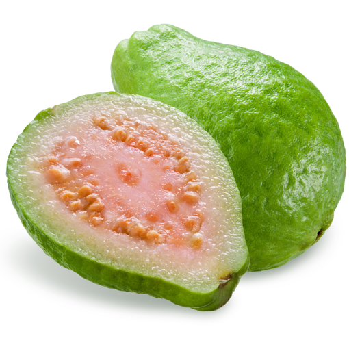

अमरुद
- यह एक बहुत नर्म फल है पर इसके बीज बहुत सख्त होते है।पर ये बीज पेट के लिए बहुत अच्छे , रेचन करने वाले होते है। इसलिए जाम को गोल गोल स्लाइस में काटिए। चारो तरफ का गुदा अच्छी तरह चबा कर खा ले और बीजों को थोड़ा मुंह में चला कर ऐसे ही नि...गल ले। इसके बीज चबाने से अच्छा है उन्हें ऐसे ही निगलना।
- यह हृदय को मजबूती देने वाला और घबराहट दूर करने वाला है।
- यह मस्तिष्क की ताकत बढाता है।
- यह शरीर की कमजोरी दूर कर ; ऊर्जा देता है।
- यह मन को प्रसन्नता देने वाला फल है।
- यह दाह को कम करता है।
- इसे नमक के साथ खाने से पेट के कीड़े ख़त्म करता है।
- इसकी पत्तियाँ ज्वर नाशक , कफ नाशक और खांसी में लाभदायक है।
- मसूड़ों के दर्द और मुंह की के लिए इसकी पत्तियोंको कूटकर उसमे थोड़ी लौंग का चुरा और सेंधा नमक मिला कर लगाए।
- मुंह के छालों के लिए इसकी पत्तियाँ चबाकर थूक दे या निगल ले।
- इसकी पत्तियों के रस से भांग का नशा कम होता है।
- ज्वर में इसकी पत्तियों , गिलोय और तुलसी को उबालकर काढ़ा ले।
- संग्रहणी या कोलाइटिस या लीवर की परेशानी में इसकी पत्ती , छाल का पावडर और थोड़ी सी सौंठ उबालकर ले।
- अमरुद के साथ काला नमक खाने से भी पाचन शक्ति मजबूत होती है|